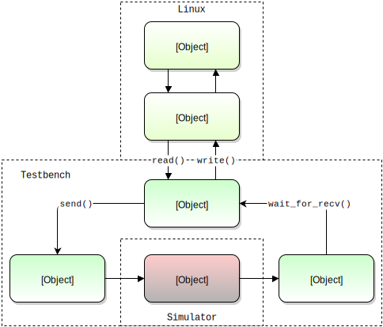

Tutorial: Ping¶
One of the benefits of Python is the ease with which interfacing is possible. In this tutorial we’ll look at interfacing the standard GNU ping command to the simulator. Using Python we can ping our DUT with fewer than 50 lines of code.
For the impatient this tutorial is provided as an example with Cocotb. You can run this example from a fresh checkout:
cd examples/ping_tun_tap/tests
sudo make
Note
To create a virtual interface the test either needs root permissions or have CAP_NET_ADMIN capability.
Architecture¶
We have a simple RTL block that takes ICMP echo requests and generates an ICMP echo response. To verify this behaviour we want to run the ping utility against our RTL running in the simulator.
In order to achieve this we need to capture the packets that are created by ping, drive them onto the pins of our DUT in simulation, monitor the output of the DUT and send any responses back to the ping process.
Linux has a TUN/TAP virtual network device which we can use for this purpose, allowing ping to run unmodified and unaware that it is communicating with our simulation rather than a remote network endpoint.
Implementation¶
First of all we need to work out how to create a virtual interface. Python has a huge developer base and a quick search of the web reveals a TUN example that looks like an ideal starting point for our testbench. Using this example we write a function that will create our virtual interface:
import subprocess, fcntl, struct
def create_tun(name="tun0", ip="192.168.255.1"):
TUNSETIFF = 0x400454ca
TUNSETOWNER = TUNSETIFF + 2
IFF_TUN = 0x0001
IFF_NO_PI = 0x1000
tun = open('/dev/net/tun', 'r+b')
ifr = struct.pack('16sH', name, IFF_TUN | IFF_NO_PI)
fcntl.ioctl(tun, TUNSETIFF, ifr)
fcntl.ioctl(tun, TUNSETOWNER, 1000)
subprocess.check_call('ifconfig tun0 %s up pointopoint 192.168.255.2 up' % ip, shell=True)
return tun
Now we can get started on the actual test. First of all we’ll create a clock signal and connect up the Avalon driver and monitor to the DUT. To help debug the testbench we’ll enable verbose debug on the drivers and monitors by setting the log level to logging.DEBUG.
import cocotb
from cocotb.clock import Clock
from cocotb.drivers.avalon import AvalonSTPkts as AvalonSTDriver
from cocotb.monitors.avalon import AvalonSTPkts as AvalonSTMonitor
@cocotb.test()
def tun_tap_example_test(dut):
cocotb.fork(Clock(dut.clk, 5000).start())
stream_in = AvalonSTDriver(dut, "stream_in", dut.clk)
stream_out = AvalonSTMonitor(dut, "stream_out", dut.clk)
# Enable verbose logging on the streaming interfaces
stream_in.log.setLevel(logging.DEBUG)
stream_out.log.setLevel(logging.DEBUG)
We also need to reset the DUT and drive some default values onto some of the bus signals. Note that we’ll need to import the Timer and RisingEdge triggers.
# Reset the DUT
dut._log.debug("Resetting DUT")
dut.reset_n <= 0
stream_in.bus.valid <= 0
yield Timer(10000)
yield RisingEdge(dut.clk)
dut.reset_n <= 1
dut.stream_out_ready <= 1
The rest of the test becomes fairly straightforward. We create our TUN interface using our function defined previously. We’ll also use the subprocess module to actually start the ping command.
We then wait for a packet by calling a blocking read call on the TUN file descriptor and simply append that to the queue on the driver. We wait for a packet to arrive on the monitor by yielding on wait_for_recv() and then write the received packet back to the TUN file descriptor.
# Create our interface (destroyed at the end of the test)
tun = create_tun()
fd = tun.fileno()
# Kick off a ping...
subprocess.check_call('ping -c 5 192.168.255.2 &', shell=True)
# Respond to 5 pings, then quit
for i in xrange(5):
cocotb.log.info("Waiting for packets on tun interface")
packet = os.read(fd, 2048)
cocotb.log.info("Received a packet!")
stream_in.append(packet)
result = yield stream_out.wait_for_recv()
os.write(fd, str(result))
That’s it - simple!
Further work¶
This example is deliberately simplistic to focus on the fundamentals of interfacing to the simulator using TUN/TAP. As an exercise for the reader a useful addition would be to make the file descriptor non-blocking and spawn out separate coroutines for the monitor / driver, thus decoupling the sending and receiving of packets.